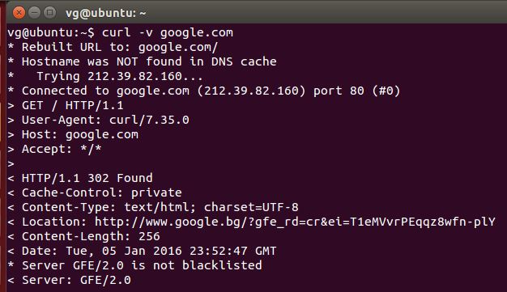

Какво е REST
- съкратено от (Representational State Transfer)
- представен и дефиниран за пръв път през 2000г. от Рой Филдинг в докторската си дисертация
- представлява архитектурен стил за дизайн на разпределени системи
Ограничителни условия
- Наличие на Клиент-сървър архитектура
- Без статус на сесията (stateless)
- Кеширане
- Многослойна система
- Код при поискване (незадължително)
- Единен интерфейс
Клиент-сървър архитектура
- Клиент-сървър е тип мрежова архитектура, която отделя клиента от сървъра
- Клиентът и сървърът могат да бъдат заменяни или развивани независимо един от друг, стига това да не налага промяна на единния интерфейс помежду им
Клиент-сървър архитектура
Характеристика на клиента
- Подава заявки
- Изчаква отговор
- Свързва се до малък брой сървъри едновременно
- Взаимодейства си с крайните потребители чрез графичен интерфейс
Клиент-сървър архитектура
Характеристика на сървъра
- Пасивност (slave)
- Чака за заявки от клиенти
- При получаване на заявки, ги обработва и след това отговаря
- Получава заявки от голямо количество клиенти
- Не контактува директно с крайният потребител
Без статус на сесията (stateless)
Не е нужно статусите на сесиите на различните потребители да се пазят на сървъра. Всяка заявка от клиента, съдържа в себе си нужната информация за нейната обработка, статуси на сесии се запазват единствено при клиента.
Кеширане
Клиента има право да кешира (запазва) информация, получена в отговор от сървъра, за да я преизползва при последващи заявки. За тази цел сървърът трябва имплицитно или експлицитно да е посочил дали информацията в отговора може да се кешира, за да се избегнат случаи, в които клиентът получава грешна информация при бъдещи заявки. При правилно управление и използване на кеширането могат частично или напълно да се елиминират ненужни взаимодействия между клиента и сървъра, като по този начин се подобрява бързината и производителността.
Многослойна система
Обикновено клиентът не знае дали е свързан с крайния сървър или със сървър-посредник. Сървърите-посредници подобряват ефективността, като увеличават капацитета за обработване на заявки и предоставят споделени кешове. Също така те допринасят да подобряването на сигурността.
Kод при поискване
Сървърът може временно да разшири функционалността, изпращайки код, който се изпълнява директно при клиента. Например клиентски скриптове, написани на JavaScript или компилирани компоненти като Java applets.
Единен интерфейс
Eдинният интерфейс между клиента и сървъра разделя и опростява архитектурата. По този начин всеки компонент може да се развива самостоятелно.
Обобщение
Единственото условие на REST архитектурата, което не е задължително е "Код по поискване". Всяко приложение (услуга), изпълняващо на гореописаните условия, може да се нарече "RESTful". Ако нарушава дори едно от условията, то не може да бъде считано за "RESTful".
Всяка разпространена хипермедийна система, съответстваща на архитектурния стил на "REST" притежава нужната производителност, мащабируемост(скалируемост), опростеност, гъвкавост, видимост, портативност и надеждност.
Характеристики на REST
- Лека алтернатива на SOAP
- Платформено независим
- Технологично независим
- Може лесно да се използва при наличие на firewall
- Използва HTTP протокола
HTTP протокол
Протокол за трансфер на хипертекст (hypertext transfer protocol) е мрежов протокол, от приложния слой на OSI модела, за пренос на информация в компютърни мрежи. HTTP определя 8 различни клиентски метода за заявки:
- HEAD — иска изпращане на заглавията отговарящи на посочения с URL ресурс. Отговорът на сървъра е идентичен с този на GET, но е с липсващо тяло. По този начин може да се вземе само метаинформацията, свързана с ресурса, спестявайки трансфера на целия файл.
- GET — с него клиентът прави заявка за ресурс, зададен чрез URL. Могат да се изпращат и ограничено количество данни, закодирани директно в самия URL (отделени чрез въпросителен знак).
- POST — позволява клиентът да изпрати данни на сървъра. Тази заявка обикновено се генерира при изпращането на уеб формуляр, а данните могат да бъдат: текст, написан от потребителя във формуляра; файл на клиентския компютър и др.
- PUT — качва файл, който в бъдеще ще отговаря на посочения URL.
HTTP протокол
- DELETE — изтрива посочения ресурс.
- TRACE — сървърът връща получената заявка със статус OK. Позволява да се провери в какъв вид пристига заявката при сървъра и дали (и как) е била модифицирана по трасето от междинни прокси сървъри.
- OPTIONS — сървърът трябва да отговори с поддържаните от него клиентски методи, съответстващи на зададения URL, или с поддържаните от сървъра методи като цяло, ако е зададено * вместо URL.
- CONNECT — използва се при комуникация през прокси.
Как работят заявките
GET заявка на клиента /пример/
- GET http://bg.wikipedia.org/wiki/HTTP -доставя мрежовия ресурс (файл, скрипт и т.н. които е асоцииран с този URL)
- Host: определя Интернет хоста и номера на порта на ресурса, който е заявен. (fi.wikipedia.org)
- User Agent: съдържа информация за приложението на клиент-хоста, извършващо заявката.
- Referer: от коя страница е пристигнато на заявения ресурс (от търсачка, друг сайт, ако не е изрично забранено в настройките на браузъра)
Как работят заявките
Отговор на сървъра
- Status code: обозначава успешното или неуспешно извършване на заявката.
- Date: датата и часа на сървъра
- Expires: „време на годност“ - времето, до което страницата е валидна, т.е. може да бъд„кеширана (запазена локално на клиента или друг прокси или кеш сървър“
- Server: името на сървърното приложение и версията му
- Content-type: тип на документаSet-Cookie:запазва бисквитка (cookie), която бива върната към сървъра при последваща заявка
Как да следим какви заявки се изпращат:
- Chrome developer tools
- Firefox with firebug
- curl
HTTP response codes
- 200 OK - успешна заявка.
- 201 Create - успешна заявка при която е създаден ресурс след PUT или POST заявка.
- 400 Bad Request - неуспешна заявка, обикновено се получава след PUT или POST заявка, когато информацията, която се предава не е минала валидация, не е в правилния формат.
- 401 Unauthorized - нужна е аутентикация преди, за да се достъпи ресурса.
- 404 Not Found - ресурсът не е намерен, получава се в случаи, когато заявката към даден URL адрес не връща ресурс, тъй като, той не се намира там.
- 500 Internal Server Error - обикновено се получава при грешки в сървъра.